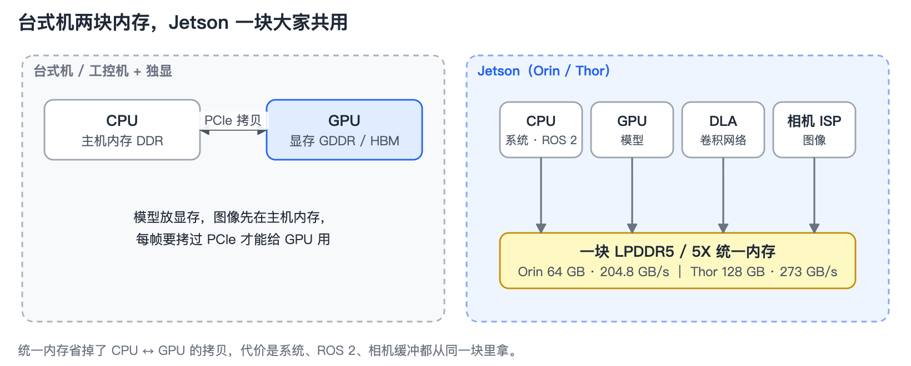
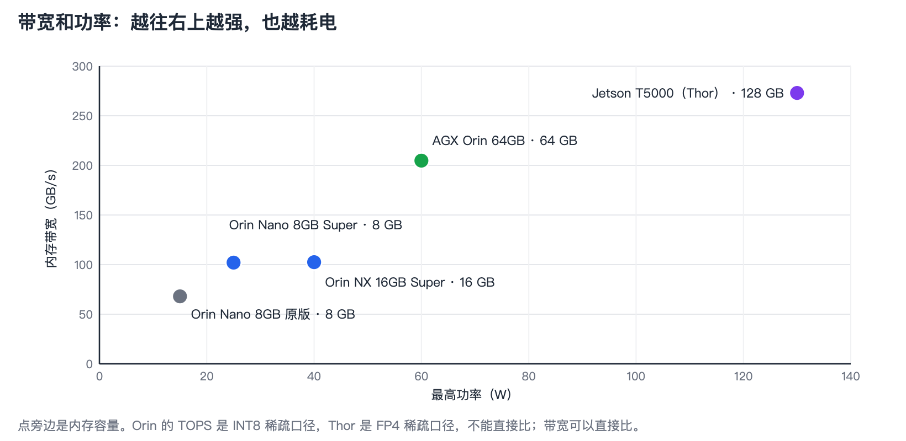
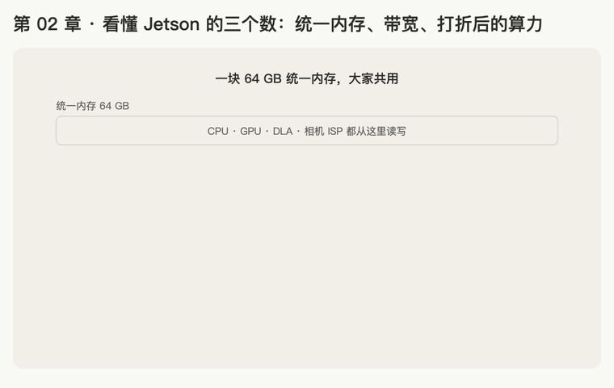

第 2 章 · 端侧芯片：看懂 Jetson 的三个数
本地运行
git clone https://github.com/wikieden/robot-edge-inference
cd robot-edge-inference/code/notebooks
pip install jupyterlab torch numpy
jupyter lab ch02_edge_chips.ipynb也可以下载后直接用 VS Code 打开 .ipynb 运行。需要 GPU 的章节在 Colab 里选「代码执行程序 → 更改运行时类型 → GPU」。
本章回答：给机器人挑一块计算板，数据表上那么多数字，先看哪几个？官方写的 275 TOPS 能直接拿来算吗？
编写日期：2026-11-26 · 上一章：第 1 章 机器人上的推理 · 下一章：第 3 章 先算下限
对应原文：NVIDIA 官方页面（2026-11-26 核对，地址和全部数字见 附录 · 材料来源）：Jetson Thor 产品页、JetPack 6.2 Super Mode 博客（Table 2）、Jetson T4000 博客、AGX Orin 发布博客（2022）
本章缩写：SoC = System on Chip（片上 / 系统，CPU、GPU 等做在一块芯片上）· LPDDR = Low-Power Double Data Rate（低功耗 / 双倍 / 数据速率内存，手机和 Jetson 用的内存）· TOPS = Tera Operations Per Second（每秒万亿次运算）· TFLOPS = Tera Floating-point Operations Per Second（每秒万亿次浮点运算）· INT8 = 8-bit integer（8 位整数）· FP4 = 4-bit floating point（4 位浮点）· DLA = Deep Learning Accelerator（深度学习 / 加速器，Orin 上专跑卷积网络的小核）· ISP = Image Signal Processor（图像 / 信号 / 处理器，处理相机原始数据）· PCIe = Peripheral Component Interconnect Express（外设 / 部件 / 互联 / 高速版）· ROS 2 = Robot Operating System 2（机器人 / 操作 / 系统 第 2 版）· JetPack = NVIDIA 给 Jetson 的整套系统软件 · MAXN = NVIDIA 功率模式里"不限功率"那一档的名字（官方没给全称）· AGX = Jetson 高端型号的产品名（官方没给全称）。全部缩写见附录 · 缩写与术语表
讲解
第一步：统一内存：一块内存大家共用（2026-11-26）
类比：合租房的一个冰箱。 台式机像分开住：CPU 有自己的冰箱（主机内存），显卡有自己的冰箱（显存），东西要从一个搬到另一个（走 PCIe 拷贝）。Jetson 像合租：CPU、GPU、DLA、相机 ISP 共用一个大冰箱，谁都能直接拿，不用搬。

两个后果：
- 好处：相机拍到的图，GPU 可以直接读，省掉一次拷贝。
- 代价：数据表上写的"64 GB"不全是模型的。系统、ROS 2、相机缓冲、日志都从这里拿。
例子（系统预留 3 GB 是编的，自己的机器要用 tegrastats 之类的工具实测）：
| 模组 | 统一内存 | 留给模型约 |
|---|---|---|
| Orin Nano 8GB | 8 GB | 5 GB |
| Orin NX 16GB | 16 GB | 13 GB |
| AGX Orin 64GB | 64 GB | 61 GB |
| Jetson T5000（Thor） | 128 GB | 125 GB |
8 GB 的板子扣掉预留只剩 5 GB 左右，这决定了它能放多大的模型（第 3 章第四步）。
一句话：Jetson 的内存 CPU 和 GPU 共用，省了拷贝，但数据表上的容量要先扣掉系统那份。
第二步：一张表看 Jetson 全家（2026-11-26）
全部来自 NVIDIA 官方页面（附录 · 材料来源）：
| 模组 | 内存 | 带宽 | 官方 AI 算力 | 功率 |
|---|---|---|---|---|
| Orin Nano 8GB（原版） | 8 GB | 68 GB/s | 40 INT8 TOPS（稀疏） | 7–15 W |
| Orin Nano 8GB（Super） | 8 GB | 102 GB/s | 67 INT8 TOPS（稀疏） | 最高 25 W |
| Orin NX 16GB（Super） | 16 GB | 102 GB/s | 157 INT8 TOPS（稀疏） | 10–40 W |
| AGX Orin 64GB | 64 GB | 204.8 GB/s | 275 INT8 TOPS（稀疏） | 15–60 W |
| Jetson T4000 | 64 GB | 273 GB/s | 1200 FP4 TFLOPS（稀疏） | 40–70 W |
| Jetson T5000（Thor） | 128 GB | 273 GB/s | 2070 FP4 TFLOPS（稀疏） | 40–130 W |
先看哪三个数：
- 内存容量：模型放不放得下（第 3 章第四步）；
- 内存带宽：batch = 1 时每生成一步要读一遍权重，带宽决定最快多快（第 3 章第二步）；
- 功率：电池和散热扛不扛得住（第 7 章）。
AI 算力（TOPS）排在后面，因为它有好几层折扣，下一步讲。

一句话：挑板子先看容量、带宽、功率三个数，算力数字要打完折再用。
第三步：算力的两层折扣，以及 Super Mode（2026-11-26）
类比：超市的"最高省 50%"。 广告上的数是最好情况：只有指定商品、满足条件才有。官方 TOPS 也是这样。
第一层：稀疏 vs 稠密。 Orin 的 TOPS 都是稀疏口径：假设权重里每 4 个数有 2 个是 0（叫 2:4 稀疏），硬件可以跳过它们，算力翻倍。普通训练出来的模型权重不是这样，所以要先打对折，叫稠密口径。AGX Orin：\(275 \div 2 = 137.5\) INT8 TOPS（官方博客给的稠密值是 138）。
第二层：实际利用率。 峰值是所有计算单元每个时钟都在算。真实模型有搬数据、等同步、小算子，跑不满。例子（40% 是编的，实测才准）：\(137.5 \times 40\% = 55\) TOPS。
第三层（Thor 要注意）：精度不同不能直接比。 Thor 的 2070 是 FP4 稀疏 TFLOPS，Orin 是 INT8 稀疏 TOPS。精度越低，同一块硬件能报的数越大，所以 2070 和 275 不能直接相除。比较两块板子时，带宽的口径是一致的，可以直接比：273 ÷ 204.8 ≈ 1.33 倍。
Super Mode：Orin Nano 和 Orin NX 的 Super 是同一块硬件，靠 JetPack 6.2 提高频率和功率上限。Orin Nano 8GB：带宽 \(68 \to 102\) GB/s（× 1.50），算力 \(40 \to 67\)（× 1.68），功率上限 \(15 \to 25\) W。看数据表时要分清写的是原版还是 Super。
一句话：官方 TOPS 先除以 2 换成稠密，再乘实际利用率；不同精度的数不能直接比，带宽可以。
第四步：功率模式和每瓦带宽（2026-11-26）
Jetson 有几档功率模式，用 nvpmodel 切换。Orin NX 16GB（Super）官方列了 10 W、15 W、25 W、40 W 和 MAXN SUPER 几档。档位越低，频率越低，推理越慢，但电池撑得越久、发热越少。
每瓦换来多少带宽（按最高功率算）：
| 模组 | 带宽 ÷ 最高功率 |
|---|---|
| Orin Nano 8GB（原版） | 68 ÷ 15 = 4.53 GB/s 每瓦 |
| Orin Nano 8GB（Super） | 102 ÷ 25 = 4.08 |
| Orin NX 16GB（Super） | 102 ÷ 40 = 2.55 |
| AGX Orin 64GB | 204.8 ÷ 60 = 3.41 |
| Jetson T5000（Thor） | 273 ÷ 130 = 2.10 |
小板子每瓦更划算，但总量小，大模型放不下；Thor 每瓦不是最高，但容量和总带宽最大。选型是在"放得下、跑得够快、电扛得住"三者之间找平衡，第 8 章用一个完整例子走一遍。
其他平台：瑞芯微 RK3588、高通、地平线等也有带 NPU（Neural Processing Unit，神经网络处理器）的板子。本书没有核对它们的官方数据表，不列数字；选型时看同样三个数：容量、带宽、功率，再看工具链支不支持你的模型。
一句话：功率模式是用速度换电和热；小板子每瓦划算但放不下大模型，选型要三者一起看。
动画演示：统一内存和打折后的算力

可交互版：animations/02-edge-chips.html（滑块：实际利用率）
怎么看：
- 上面一条是 64 GB 统一内存，先被系统、ROS 2、相机拿走一块（第一步）；
- 下面三根条：官方稀疏 275 → 稠密 137.5 → 乘利用率 40% ≈ 55（第三步）；
- 拖滑块看利用率变化时，最后剩多少。
练习与作答记录
题 1（第三步 折扣）：Orin NX 16GB（Super）官方 157 INT8 TOPS（稀疏）。按稠密口径是多少？再按实际利用率 30% 算，大约还剩多少？
作答：（待作答）
题 2（第一步 统一内存）：一块 16 GB 的 Orin NX，系统和 ROS 2 占 3 GB，相机缓冲又占 1.5 GB。一个占 12 GB 的模型放得下吗？
作答：（待作答）
题 3（第三步 精度）：为什么不能用"2070 ÷ 275 ≈ 7.5"说 Thor 比 AGX Orin 快 7.5 倍？用哪个数比更公平？
作答：（待作答）
口诀
内存大家一块用，先扣系统再算模型；
容量带宽加功率，挑板先看这三个；
稀疏先除二，再乘利用率；
精度不同不能比，带宽口径最老实。
本章复习卡片
E03（官方 TOPS 怎么打折）、E04（挑板子先看哪三个数）
附录 · 延伸阅读
留给以后深入学习用，不影响本章主线。★ 是建议先读的。
推荐阅读
| 读什么 | 读哪里 | 读它为了什么 |
|---|---|---|
| ★ JetPack 6.2 Super Mode 博客 | Table 2（原版 vs Super 的带宽、稀疏 / 稠密 TOPS、DLA、功率模式）；见 附录 · 材料来源 | 一张表看清 Orin Nano / NX 的口径 |
| Jetson Thor 产品页 | 规格表；见 附录 · 材料来源 | Thor / T4000 的内存、带宽、FP4 算力、功率 |
| 机器人软硬件架构 · 电气与计算 | robot-system-architecture 第 5 章 | 主控、实时核、驱动板三种计算单元各管什么 |
| 《深入理解 AI Infra》§4.6.3 | ai-infra/materials/ai-infra-book/manuscripts/04-加速器架构.md L844 起 |
Apple 统一内存的同类分析：容量和带宽怎么换算成模型运行能力 |
数学原理
- 稀疏折扣：2:4 稀疏是每 4 个数里固定 2 个为 0，硬件跳过它们，报出来的算力是稠密的 2 倍。
- 利用率：实际算力 = 峰值 × 利用率，利用率要实测。
公式清单
| 公式 | 意思 |
|---|---|
| 稠密 \(=\) 稀疏 \(\div 2\) | 官方 TOPS 换成稠密口径 |
| 实际 \(=\) 稠密 \(\times\) 利用率 | 真实能跑到的算力 |
| 留给模型 \(=\) 总内存 \(-\) 预留 | 统一内存里模型能用的部分 |
| 每瓦带宽 \(=\) 带宽 \(\div\) 功率 | 端侧的效率指标 |
代码对照：把本章的数字用代码算一遍
纯 Python，不需要安装任何库。代码在仓库本地
ai-infra-edge/solutions/chapter-code/ch02_edge_chips.py，配套测试tests/test_chapters.py::test_ch02，notebook 在notebooks/ch02_edge_chips.ipynb。Mac 上直接能跑，不需要 GPU：
bash cd ai-infra-edge/solutions/chapter-code uv run python ch02_edge_chips.py # 一步一步打印 uv run pytest tests/test_chapters.py -k ch02
讲义 ↔ 代码（模组参数来自官方页面；系统预留 3 GB、利用率 40% 是编的）：
| 讲义 | 公式 | 写法 | 跑出来 |
|---|---|---|---|
| 第一步 留给模型的内存 | 总内存 − 3 | usable_gb(64) |
61 GB |
| 第三步 稠密口径 | 稀疏 ÷ 2 | dense(275) |
137.5 |
| 第三步 实际算力 | 稠密 × 40% | effective(dense(275)) |
55 TOPS |
| 第三步 Super Mode | 新 ÷ 旧 | 102 / 68 |
1.50 倍 |
| 第四步 每瓦带宽 | 带宽 ÷ 功率 | gbps_per_watt(204.8, 60) |
3.41 GB/s 每瓦 |
关键几行：
def dense(sparse):
return sparse / 2 # 官方稀疏口径打对折
def effective(dense_peak, util=0.4):
return dense_peak * util # 再乘实际利用率（40% 是编的，要实测）
代码里才看得到的 2 件事：
MODULES里每一行都带着"算力口径"字段：INT8 稀疏 TOPS 和 FP4 稀疏 TFLOPS 混在一张表里时，不带口径的数字很容易被拿来直接相除。- 功率用的是官方写的最高功率；实际跑的档位往往更低，每瓦带宽要按你用的档位重算。
自己改一改（不影响练习答案）：
- 把
usable_gb的预留从 3 GB 改成 5 GB（再开一个大日志进程），看 8 GB 板子还剩多少。 - 把利用率改成 25%，看 AGX Orin 实际只剩多少 TOPS。